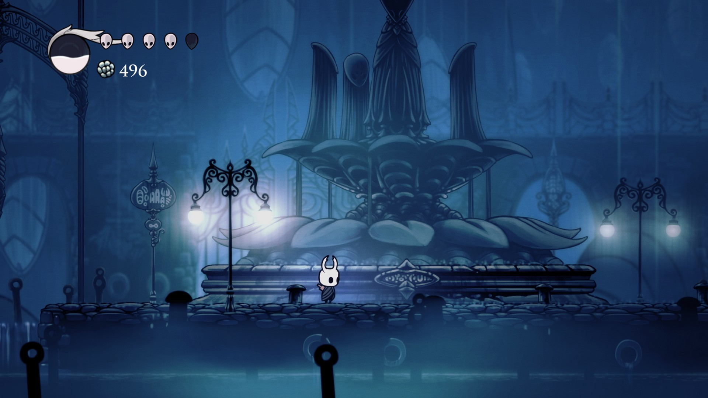
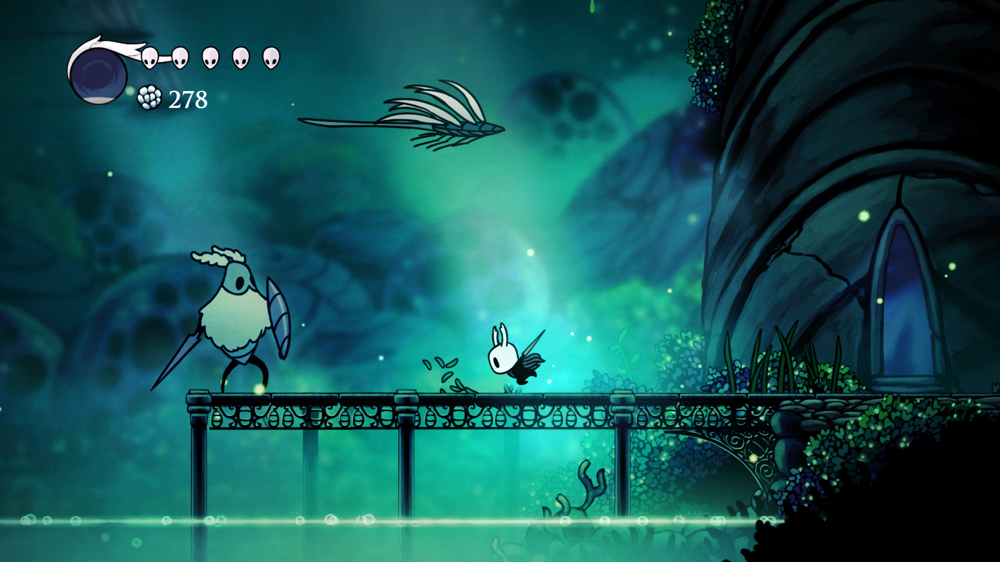
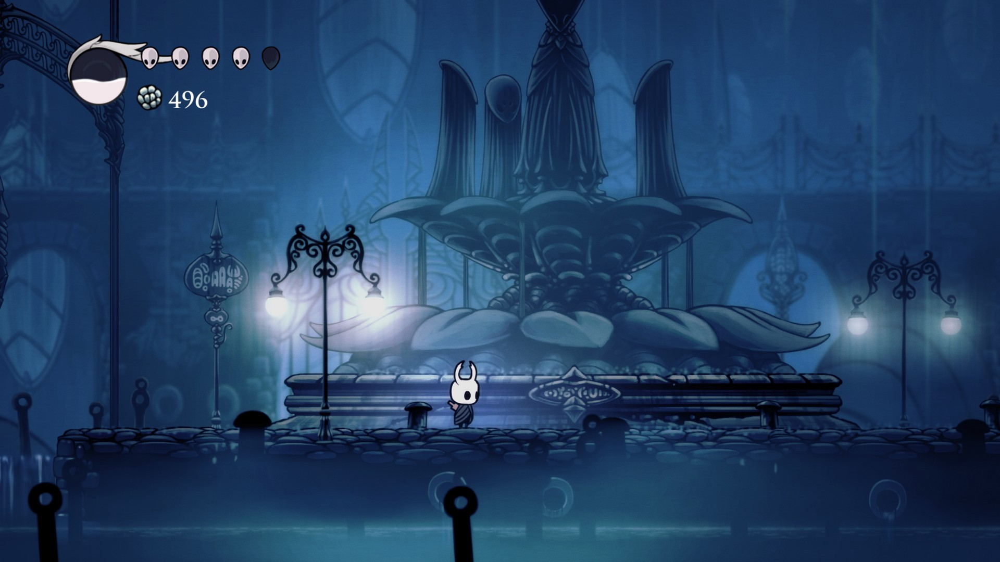
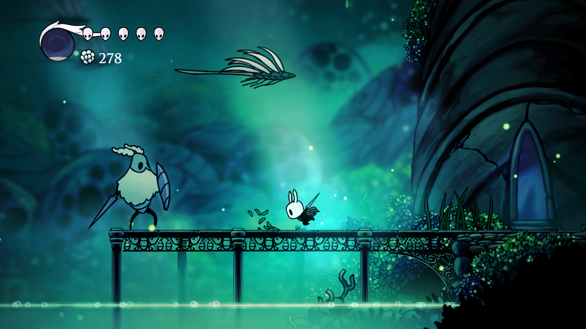

Bem-vindo à Wiki de Hollow Knight!
A melhor fonte de informações de Hollow Knight, aqui você poderá encontrar várias informações sobre o jogo, desde sobre a história do jogo até informações que vão te ajudar em sua gameplay.Hollow Knight é um game de ação e aventura desenvolvido pela team cherry inspirado em clássicos como Metroid e Castlevania, mas principalmente na popular série Dark Souls. O título traz um pequeno cavaleiro em uma jornada para selar uma infecção maléfica capaz de destruir todo o seu mundo. O gameplay é profundo e garante horas de exploração e muitas mortes até conseguir vencer seus oponentes.
 




confira o trailer oficial do jogo para saber um poco mais do que se trata!